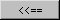
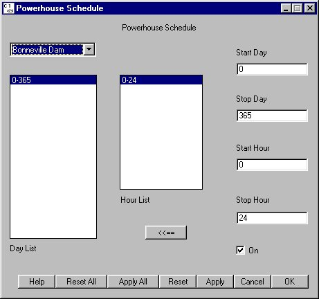

Powerhouse Schedule
Selecting Dam Powerhouse Schedule opens a window for setting the days and hours in which any powerhouse is used. Dams with two powerhouses can operate on a schedule to optimize survival during the fish passage season. The strategy is to operate the highest priority powerhouse up to its hydraulic capacity, then spill water up to another level called the spill threshold (set in Powerhouse Spill Thresholds window). Above this threshold, the second powerhouse is used. If the hydraulic capacity of the second powerhouse is exceeded, excess flow is spilled. For times when the second powerhouse is not scheduled, the spill threshold is not applied and all flow exceeding the hydraulic capacity of the first powerhouse is put into spill only. In the example, the Bonneville Dam primary powerhouse (set in Powerhouse Priority window) is on all day, every day.
Powerhouse Schedule opens a window for setting the days and hours in which any powerhouse is used. Dams with two powerhouses can operate on a schedule to optimize survival during the fish passage season. The strategy is to operate the highest priority powerhouse up to its hydraulic capacity, then spill water up to another level called the spill threshold (set in Powerhouse Spill Thresholds window). Above this threshold, the second powerhouse is used. If the hydraulic capacity of the second powerhouse is exceeded, excess flow is spilled. For times when the second powerhouse is not scheduled, the spill threshold is not applied and all flow exceeding the hydraulic capacity of the first powerhouse is put into spill only. In the example, the Bonneville Dam primary powerhouse (set in Powerhouse Priority window) is on all day, every day.
- Powerhouse Dam menu: Designates dam to which powerhouse activity applies.
- Day List: Designates days of activity.
- Hour List: Designates hours of activity for the selected period in the Day List.
- Start Day and Stop Day: Text boxes to create or modify powerhouse activity periods.
- Start Hour and Stop Hour: Text boxes to create or modify powerhouse activity periods.
- On check box: Indicates that powerhouse operations are on for the period selected. Clear check box and modify powerhouse schedule to turn off powerhouse activity for the desired period of hours and/or days.
In the figure below, the powerhouse is set to operate all day, all year-round. Use the Start Day, Stop Day, Start Hour, and Stop Hour keyboard input boxes to create new periods or modify existing periods of activity. In order to have periods where the powerhouse is not in operation, you must clear the On check box and set Start Day, Stop Day, Start Hour, and Stop Hour for the period in which powerhouse operations are not to occur. For example, if you want the powerhouse to operate only at night and not during the day hours (6-18):
- Select a Dam from the Powerhouse Dam menu.
- Clear the On check box.
- Type the desired Start Day and Stop Day for the period in which powerhouse operations are not to occur.
- Type 6 for Start Hour and 18 for Stop Hour.
- Click  to transfer the values from the text boxes to the Day List and Hour List.
The new/modified values only take effect after clicking Apply / Apply All / OK.
This is a Schedule Tool window.

Powerhouse Schedule window